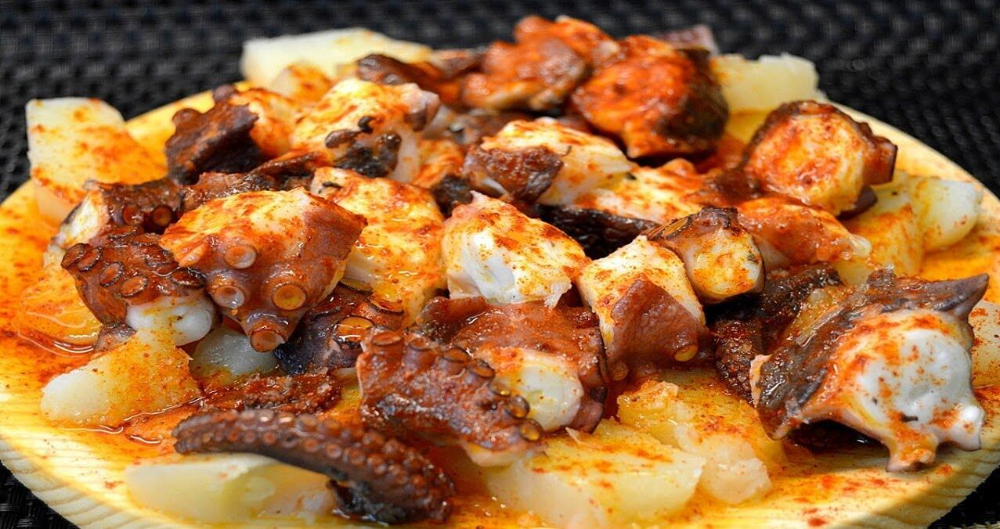

Pulpo á feria

El pulpo á feiraes un plato típico de Galicia, en el noroeste de España. Se trata de pulpo cocido y
luego cortado en rodajas, acompañado opcionalmente de patatas cocidas y aderezado con aceite de oliva, sal y
pimentón (generalmente, pimentón de la Vera). Este plato es una delicia y es especialmente popular en
fiestas y ferias, de ahí su nombre "á feira".
La receta a continuación, cortesía de
>ChatGPT, se presenta
con patatas. En caso de no querer añadirlas se puede prescindir de ellas perfectamente.
Ingredientes para 4 personas:
- 1 pulpo (aproximadamente 2 kg)
- 4 patatas grandes.
- Aceite de oliva virgen extra
- Sal al gusto
- Pimentón dulce o picante al gusto
Para cocinarlo, sigue los siguientes pasos:
-
Limpia el pulpo: Lava bien el pulpo para quitar cualquier resto de arena. Puedes pedir en la pescadería
que lo limpien por ti.
-
Cocina el pulpo: En una olla grande, lleva agua a ebullición. Sumerge el pulpo en el agua tres veces,
dejándolo unos segundos cada vez, antes de sumergirlo por completo. Esto permitirá mejorar su textura
y lograr que la carne salga tierna, evitando que se vuelva gomosa o demasiado dura. Cocina el pulpo en
agua hirviendo durante unos 40-50 minutos o hasta que esté tierno. Puedes pincharlo con un tenedor para
comprobar la textura.
-
Cocina las patatas: Mientras el pulpo se cocina, pela las patatas y córtalas en rodajas. Cocínalas en
agua con sal hasta que estén tiernas.
-
Corta el pulpo: Cuando el pulpo esté listo, córtalo en rodajas.
-
Monta el plato: Coloca las rodajas de pulpo sobre las patatas cocidas en un plato grande. Rocía con
aceite de oliva, espolvorea con sal y pimentón al gusto.
Como puedes ver, la elaboración es bastante sencilla. Y es que cuando los ingredientes son de tanta calidad,
no es necesario complicarse. ¡Espero que te guste!